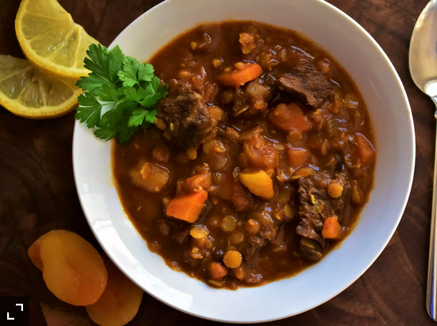

Delicious Stew
Lentil Stew

Description
The lentil stew is a terrific food, has pretty much every nutrient that could need and more, and is delicious.
Ingredients
- Meat x 500g
- Red Chorizo x 1
- bacon x 100g
- Lentils x 1kg
- Tomato paste x 500 mg
- Clove of garlic x 3
- Onion x 1
- Red bell pepper x ½
- Green bell pepper x ¼
- Tomato x 1
- Potato x 2
- Sweet potato x 1
- Carrot x 1
- Pumpkin x 300g
- Parsley x 20g
- Paprika x 2 teaspoon
- Oil x 30ml
- Salt
- Pepper
- beef bouillon cube
- beans x 1 can (precooked)
Steps
- Dice potatoes, carrot, pumpkin, tomato and sweet potato
- Cut the garlic cloves and put them in cup with the oil
- Finely chop the onion, red and green bell peppers
- Dice the meat, chorizo and bacon
- Put the garlic in a hot pot, low heat until it starts to brown
- Add the onion, green and red bell peppers, mix, put a lid and cook till the onion is soft
- Mix the meat, chorizo, tomato and bacon, season to taste, with salt, pepper, add the paprika and parsley
- Wait for 5 minutes
- Add the beef bouillon cube
- Add the lentils, tomato paste and water, turn the heat up, put the lid on and wait until it boils
- Once boiling, turn the heat down and stir the stew every 10 or 20 minutes
- 50-60 minutes in you can start checking for the lentils to be soft
- Add the beans, wait 5 minutes and it's done, bon appetit
Home